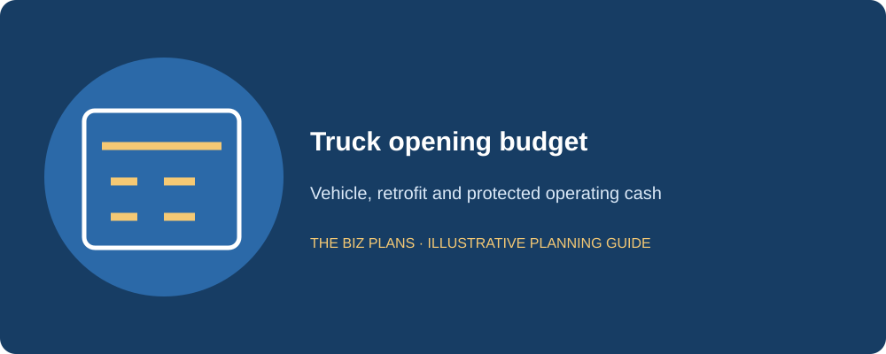
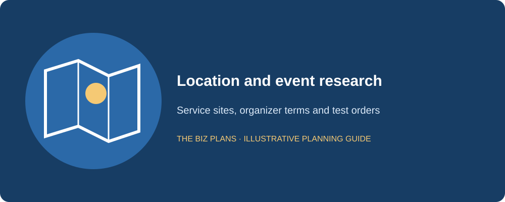
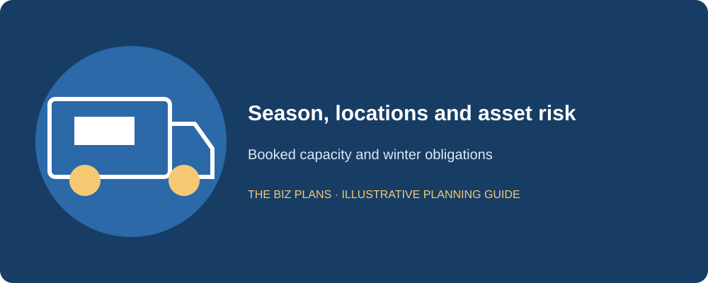
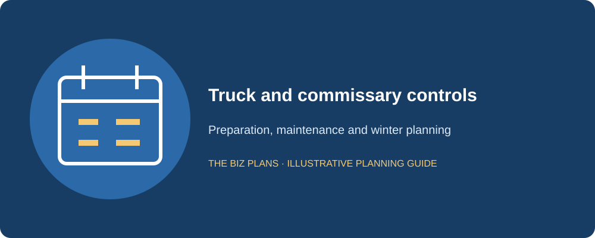

This food truck business plan sample follows Warden Hill Food Truck, a fictional GTA operator serving gourmet grilled cheese and poutine at lunch locations, festivals and private events. The fictional founder is a former line cook with seven years of kitchen experience. Read the sample content, then the italic notes explaining what a lender needs to verify. The example treats each service location as a commercial arrangement to secure, not a public place the operator can simply assume is available.
Use the guide to connect the menu and truck budget to the months when cash actually arrives. The base case has seven selling months and five months without sales, an illustrative choice rather than a claim about every Canadian food truck. It includes an opening budget, location pipeline, commissary backup, monthly seasonality table and three linked financial statements. Use the checklist as a food truck business plan template Canada applicants can adapt, replacing the fictional bookings, costs and operating calendar with documented local evidence.
All company details and financial figures in this sample are illustrative examples showing plan structure — not market data, and not forecasts for any real business.
How to use this sample
- Read the annotations to understand what a lender or investor checks in each section.
- Swap in your actual quotations, customer research and operating assumptions; recalculate the linked statements.
- Do not submit a fictional sample to a lender. Use business plan writing services to develop an application based on your business.
Start with the operating locations, permissions and commissary arrangement before buying a vehicle. A truck that can cook the menu safely still needs legal places to trade and a feasible preparation routine. Confirm what approvals apply in each municipality and at each event; one licence should not be assumed to authorize all proposed GTA stops.
How much does it cost to start a food truck in Canada?
Warden Hill’s illustrative startup range is $90,000–$150,000, with an illustrative $110,000 base budget. This is a scenario for the specified truck and menu, not a national cost average. Vehicle condition, retrofit scope, refrigeration, power and inspection needs can change the amount materially. Obtain a mechanical inspection and food-service installation quotes before treating an advertised truck price as a complete budget.
| Use of funds | Illustrative amount |
|---|---|
| Truck purchase and retrofit | $58,000 (illustrative) |
| Commercial kitchen equipment | $10,000 (illustrative) |
| Commissary deposits and prepayments | $3,000 (illustrative) |
| Permits, licences and food-handler training allowance | $2,000 (illustrative) |
| Initial ingredients inventory | $3,000 (illustrative) |
| Branding and wrap | $5,000 (illustrative) |
| Point-of-sale system | $2,000 (illustrative) |
| Launch marketing | $3,000 (illustrative) |
| Working-capital reserve | $19,000 (illustrative) |
| Contingency cash | $5,000 (illustrative) |
| Total | $110,000 (illustrative) |
The illustrative truck and equipment are purchased rather than leased. Compare a used fitted vehicle against a new or differently equipped one using inspection findings, installation costs, warranty, parts availability and downtime. The example capitalizes the fitted truck, equipment, wrap and POS for an illustrative $75,000 opening fixed-asset total; actual accounting treatment requires review.
The illustrative $24,000 combined working-capital and contingency cash is deliberately preserved. The monthly base case reaches its lowest illustrative cash of $6,675 before April sales begin. Spending the reserve on extra customization would therefore change the winter-survival case, even if the annual profit table still looks healthy.

A lender needs an inspected, financeable asset and enough remaining cash for delays and low-sales months, not only a vehicle purchase price.
Are food trucks profitable?
They can be, but profit depends on locations, weather, event terms, menu contribution, staffing and vehicle reliability. The sample assumes illustrative food cost of 28% of revenue, leaving ingredients contribution before labour, event fees and other expenses. This is an operating assumption rather than a sourced industry benchmark. A good ingredient margin does not make an unbooked event or a cancelled service profitable.
Illustrative Year 1 revenue is $240,000, and illustrative net profit is $25,075 after operating costs, depreciation, interest and the simplified tax provision. The founder’s illustrative $36,000 salary is already included in labour. The company retains profits and makes no owner dividends in the forecast. Cash also has to cover principal payments and replacement spending, neither of which is included in net profit as an ordinary operating expense.
At an illustrative 80% of revenue, with food and event fees varying proportionately but other costs unchanged, illustrative EBITDA falls from $50,800 to $19,840. That leaves much less room for interest, debt principal and repairs. A real downside model should include cancelled high-contribution events, not just spread a uniform reduction across every service day.
Sample executive summary
Warden Hill Food Truck will be a GTA-based mobile food business serving gourmet grilled cheese and poutine at approved lunch locations, festivals and private events. I founded the concept after seven years in professional kitchens, including line service, food preparation and stock control. Our initial menu will use shared ingredients and clear preparation steps so a small crew can deliver consistent food in a limited mobile workspace.
The opening model will combine recurring lunch arrangements with selected festivals and booked catering. Locations will be assessed for permissions, service capacity, event fees and customer fit before we commit. We will maintain an approved commissary arrangement for the preparation and storage our operating model requires, with an alternate location identified. A vehicle-maintenance plan and a reduced-service contingency will address equipment or mechanical interruptions.
The illustrative startup budget is $110,000, funded by an illustrative $70,000 term loan and $40,000 owner equity. Illustrative Year 1 revenue of $240,000 is earned across seven selling months, with five months of fixed costs and no sales in the conservative base case. Revenue grows to an illustrative $420,000 by Year 3 through additional booked events and an extended service calendar, using one truck. A second truck is a separate expansion decision and is not funded in these statements. Monthly cash controls will preserve winter reserves, while operating cash after payroll, taxes and repairs provides the loan repayment source.
The lender looks for secured trading opportunities, an experienced operator and a funded winter calendar; the fictional bookings are assumptions, not real contracts.
Sample market analysis
Our fictional customers are lunch buyers near approved GTA stops, festival visitors and private-event organizers. We hypothesize that the menu will appeal to people seeking familiar food with a distinctive preparation and short wait. Each group has different economics: a lunch stop depends on repeat visits, a festival depends on attendance and competition, and a private event depends on the agreed service scope.
Research will include location visits at proposed service times, organizer interviews, competitor menus and small test services where permitted. Record weather, queue timing, nearby alternatives and what customers actually buy. Ask organizers about vendor terms, cancellations, power access and minimum guarantees. A busy event announcement is not evidence that our particular pitch will receive enough customers.
The real plan will name proposed partners, attach permitted location agreements and distinguish confirmed bookings from inquiries. Any attendance data or municipal figures must identify a named source and period; no such numerical market claims are made here. Forecast orders from service days, average tickets and throughput, then check whether the prep and truck layout can deliver those orders safely.

Reviewers want evidence tied to a specific trading opportunity and net event economics, not a general claim that festivals attract crowds.
Prepare a seasonal financing case
Connect your vehicle quote, permits, bookings and winter cash plan.
Explore business plan servicesWhat makes a food truck plan different?
Seasonality is a cash calendar. The illustrative base case trades from April through October and assumes no winter receipts. This is a conservative fictional schedule, not a nationwide operating rule. Event catering may add winter sales, but only confirmed or supportable work belongs in the base case. November through March still incur payroll support, commissary, insurance, interest and principal.
Location is capacity you must secure. The illustrative Year 1 revenue mix is 45% lunch stops, 35% festivals and 20% private events, or $108,000, $84,000 and $48,000. A pipeline register will show permissions, dates, expected orders, cancellation terms and net contribution. The real plan must distinguish secured slots from applications awaiting acceptance. A social-media announcement does not replace a trading agreement.
The commissary is a dependency. We assume a suitable approved kitchen relationship for preparation, storage and cleaning as required by the actual activities and local authority. Requirements differ, so confirm them with the municipality and public-health unit instead of assuming every city uses the same rule. The illustrative annual fee of $12,000 remains payable through the winter. If access ends, the alternate facility must have real capacity and compatible travel time.
Collateral has a finite life. The fitted truck and kitchen assets require inspection, maintenance and a supportable useful-life assumption. Depreciation in the forecast is not a valuation report or proof of resale proceeds. Match borrowing to the asset’s usable period and maintenance needs, with a credible remaining debt balance if the operator needs to sell.

Sample company description
Warden Hill will operate through a fictional Ontario corporation. Before buying the truck, we will confirm the applicable vehicle, vending, food-safety, fire or fuel-system requirements with the relevant authorities and qualified specialists. The operating plan uses a commissary, but it does not assert that one permit or kitchen approval covers every service location. Each proposed municipality and event will be reviewed separately.
We will maintain separate business banking, bookkeeping and approval records. The sample assumes taxable revenues will exceed the CRA’s $30,000 small-supplier threshold. The registration date depends on how and when the threshold is exceeded, with associated businesses considered where applicable; consult the CRA’s GST/HST registration guidance. Collections of HST are not sales revenue. The real cash forecast must distinguish remittances, recoverable input tax credits and any taxes that remain a cost.
We will check applicable Ontario employment and WSIB obligations before engaging staff, rather than assume that every worker is an independent contractor. An accountant will review payroll and tax setup, while qualified advisers review the contracts and insurance relevant to our activities. Each compliance task will have an owner, a due date and supporting evidence. The fictional company described here is separate from The Biz Plans and from the real author’s practice.
A lender reads for a legal operating route, an actual preparation arrangement and permissions that match the service calendar.
Sample organization and management
I will lead menu preparation, truck service and purchasing. A trained second operator will supervise the station when I am absent, with casual event support added only where booked volume justifies it. Bookkeeping support will reconcile sales, event invoices, payroll and taxes. Staff training will include food safety, allergens, equipment shutdown and safe vehicle procedures relevant to their roles.
The illustrative Year 1 labour budget is $72,000, including illustrative owner pay of $36,000. The monthly model schedules a smaller winter compensation bridge and more staff cost during busy months. Actual wage rates, hours and employer costs must support that total. The model cannot assume a skilled relief operator appears at no additional cost when the founder is unavailable.
The continuity file will include recipes, commissary access details, event contacts, stock procedures and repair numbers. We will practice a second-operator service before relying on it. Private-event clients must be told about any material delivery change, and contracts should explain cancellation or rescheduling options.
The reviewer checks whether payroll supports the real season and whether a founder absence turns confirmed events into lost revenue.
Sample menu and pricing
The opening range will include a signature grilled cheese, a rotating vegetable option and classic poutine with selected add-ons. Shared ingredients and a small number of finishing steps will limit stock complexity and queue time. Recipes will show yields, portion weights, ingredient costs and allergens, with service preparation designed for safe holding and consistent quality.
Our illustrative average ticket is $16 before HST. At $240,000 illustrative annual sales, that means 15,000 transactions. An illustrative 150 selling days requires an average 100 transactions per day. This is a cross-check, not evidence of demand. Event bookings and recurring lunch stops must explain the days and orders, while the layout must support the required peak-hour throughput.
Event menus may use packages or minimum fees rather than ordinary walk-up pricing. Calculate contribution after organizer commissions, travel, additional staffing and preparation waste. A large booking with low contribution may consume the best Saturday without strengthening the cash reserve. We will approve each event using its own economic worksheet.
A lender looks for a costed, deliverable menu and the service-day math behind annual sales, including fees that reduce event contribution.
Sample food truck marketing and sales plan
We will publish a reliable service calendar only after locations and permissions are confirmed. The website and social channels will show menus, times, accessibility information and how to enquire about private events. Partnerships with site operators and event organizers will be developed early enough to plan staffing and stock. The illustrative launch marketing allowance is $3,000; ongoing costs sit within other operating expenses.
Private-event proposals will specify guest count, service window, menu, deposit, cancellation and payment terms. Booking deposits will be tracked as obligations until the service is delivered under the relevant accounting policy. Forecasting all enquiries as booked revenue would overstate both cash certainty and vehicle capacity.
The marketing review will compare enquiries, completed bookings, repeat lunch orders and contribution by location. We will retire weak sites rather than assume increasing posting frequency fixes poor foot traffic. Test services and customer feedback will guide the next menu change, while promotion costs remain visible in the event worksheet.
Lenders distinguish a contracted service date from an inquiry and want the cost of winning each type of business included in the model.
Sample food truck operations plan
Preparation will occur under the approved commissary and truck procedures for our actual activities. Daily checks will cover food temperatures, potable water, cleaning, refrigeration, waste handling and equipment condition. Supplier deliveries and transport will preserve safe storage conditions. The crew will log waste and reconcile stock against portions sold so the illustrative food-cost target can be tested.
Before each event, the operator will confirm access, power, parking, load-in timing and any venue-specific safety conditions. A breakdown plan will identify tow support, repair contacts and what service can continue safely. We will not promise a replacement truck unless one is actually available on terms included in the contingency budget.
Weekly cash reviews will reserve funds for the non-selling period. Event fees, payroll, maintenance and debt payments will be scheduled by date, not averaged into a comfortable monthly number. A second truck is excluded from the base case; expansion requires a separate vehicle, crew, permissions and financing model. The Year 3 forecast instead assumes more booked services and a longer selling calendar within tested capacity.

The lender reads for operational redundancy and the lowest cash point, because a mechanical outage during peak season can affect winter survival.
Illustrative three-year financial statements
Every financial amount, rate and ratio in this sample is illustrative. Tables are in CAD; sales exclude GST/HST. The assumed 15% tax provision is a modelling simplification, not a statement of the business’s applicable tax rate. Actual taxes, remittance timing and recoverable input tax credits require accountant review. These annual statements are linked, but a real financing application also needs monthly cash flow and a complete debt schedule.
The illustrative opening position is $75,000 fixed assets, $3,000 deposits, $3,000 inventory and $24,000 cash. Debt is illustratively $70,000 and equity $40,000, with a $5,000 pre-opening loss for licences and launch marketing. Food cost is illustratively 28% of sales. The forecast uses one truck throughout; Year 3 growth must be supported by a documented longer service calendar, not an unfinanced second vehicle.
| Line item | Year 1 (illustrative) | Year 2 (illustrative) | Year 3 (illustrative) |
|---|---|---|---|
| Revenue | $240,000 | $330,000 | $420,000 |
| Direct cost of sales | $67,200 | $92,400 | $117,600 |
| Gross profit | $172,800 | $237,600 | $302,400 |
| Labour, including founder salary | $72,000 | $90,000 | $108,000 |
| Commissary fees | $12,000 | $13,000 | $14,000 |
| Event and location fees | $18,000 | $26,000 | $34,000 |
| Other operating expenses | $20,000 | $25,000 | $30,000 |
| EBITDA | $50,800 | $83,600 | $116,400 |
| Depreciation | $15,000 | $15,000 | $15,000 |
| Interest | $6,300 | $4,950 | $3,600 |
| Profit before tax | $29,500 | $63,650 | $97,800 |
| Tax provision: illustrative 15% | $4,425 | $9,548 | $14,670 |
| Net profit | $25,075 | $54,102 | $83,130 |
| Line item | Year 1 (illustrative) | Year 2 (illustrative) | Year 3 (illustrative) |
|---|---|---|---|
| Net profit | $25,075 | $54,102 | $83,130 |
| Depreciation added back | $15,000 | $15,000 | $15,000 |
| Net working-capital cash movement | $3,000 | $0 | $0 |
| Cash from operations, after interest and tax | $43,075 | $69,102 | $98,130 |
| Replacement capital spending | ($4,000) | ($6,000) | ($8,000) |
| Debt principal or operating-line reduction | ($15,000) | ($15,000) | ($15,000) |
| Owner dividends | $0 | $0 | $0 |
| Net change in cash | $24,075 | $48,102 | $75,130 |
| Opening cash | $24,000 | $48,075 | $96,177 |
| Closing cash | $48,075 | $96,177 | $171,307 |
| Line item | Year 1 (illustrative) | Year 2 (illustrative) | Year 3 (illustrative) |
|---|---|---|---|
| Cash | $48,075 | $96,177 | $171,307 |
| Inventory and packaging | $4,000 | $5,000 | $6,000 |
| Trade receivables | $0 | $0 | $0 |
| Deposits and prepayments | $3,000 | $3,000 | $3,000 |
| Net fixed assets | $64,000 | $55,000 | $48,000 |
| Total assets | $119,075 | $159,177 | $228,307 |
| Trade payables | $4,000 | $5,000 | $6,000 |
| Total debt outstanding | $55,000 | $40,000 | $25,000 |
| Owner contributed capital | $40,000 | $40,000 | $40,000 |
| Retained earnings, including pre-opening loss | $20,075 | $74,177 | $157,307 |
| Total liabilities and equity | $119,075 | $159,177 | $228,307 |
The opening model records pre-launch spending separately from recurring operating expenses. Capitalized assets are depreciated; stock held for sale remains inventory until sold or written down. Cash reserved for payroll is not an opening-day expense. The balance sheet carries the pre-opening loss in retained earnings, preventing funding and setup costs from disappearing between statements. Real accounting treatment may differ and should be confirmed before filing or submission.
This example assumes no year-end unpaid payroll or tax, no dividends and no unlisted financing. It shows supplier credit explicitly where assumed, rather than silently treating unpaid invoices as free cash. Tax and payroll balances still need separate monthly schedules. Do not infer that a positive annual closing cash balance guarantees every month is funded; test the lowest cash point, delayed collections and required debt payments.
The following illustrative monthly schedule reconciles to the Year 1 annual cash flow. Opening cash is illustratively $24,000. It assumes cash sales, monthly interest of $525 and principal of $1,250, an April replacement payment of $4,000, and the simplified annual tax payment of $4,425 in December. April cash purchases reflect a $1,000 inventory increase and a $4,000 payable increase. HST timing still requires its own monthly schedule in a real application.
| Month | Illustrative sales | Illustrative net cash change | Illustrative closing cash |
|---|---|---|---|
| January | $0 | ($5,775) | $18,225 |
| February | $0 | ($5,775) | $12,450 |
| March | $0 | ($5,775) | $6,675 |
| April | $24,000 | $1,705 | $8,380 |
| May | $30,000 | $6,575 | $14,955 |
| June | $36,000 | $9,445 | $24,400 |
| July | $42,000 | $11,315 | $35,715 |
| August | $42,000 | $12,315 | $48,030 |
| September | $36,000 | $9,445 | $57,475 |
| October | $30,000 | $6,575 | $64,050 |
| November | $0 | ($5,775) | $58,275 |
| December | $0 | ($10,200) | $48,075 |
The lowest illustrative cash balance is $6,675 at the end of March. November through March together consume illustrative cash of $33,300, including the assumed December tax payment. Reserve that winter amount before making discretionary distributions. Booked winter catering would improve the schedule only after adding its own labour, commissary use and food costs; it is not uncosted upside.

Lenders lend against available repayment cash, not accounting profit. Trace the cash tied up in inventory or receivables and deduct required principal and replacement spending before asserting debt capacity.
Draft the plan with your own inputs
Use the free generator to organize the business model, then verify your evidence and financial assumptions.
Open the free AI generatorSample funding request and repayment source
Ask: We request an illustrative $70,000 term loan with an illustrative $40,000 owner contribution. Annual principal is illustratively $15,000; interest is illustratively $6,300, $4,950 and $3,600 across the forecast. Confirm the real terms and security value with the lender. A useful-life and resale assessment should support the borrowing period rather than stretch repayment merely to make a weak season appear affordable.
Use of funds: The combined illustrative $110,000 covers the truck, fit-out, commissary setup, stock, licences and opening cash. Submit vehicle inspection records and equipment quotations. Review possible asset-financing uses with the CSBFP guide, without assuming every expense or reserve qualifies.
Repayment source: Seasonal operating receipts fund the year’s obligations and winter reserve. Illustrative Year 1 operating cash of $43,075 supports illustrative principal of $15,000 and replacement spending of $4,000. The resulting annual surplus is not permission to empty the account after a festival. The monthly schedule and cancelled-event case must show that the truck remains funded before the next selling season.
Seasonal annual profit can hide a cash crisis. The lender wants funds reserved for each winter payment and a loan term supported by the truck’s remaining useful life.
Food truck business plan template checklist
Use these ten sections as a working outline. Keep the main document focused on the decisions the recipient must make, and move detailed supporting records into appendices. The opening budget, staffing plan and forecast should tell the same story. A template helps structure the work; it does not establish whether the underlying assumptions are true.
- Executive summary: customer, offer, founder, funding and repayment in one coherent overview.
- Company description: borrower, ownership, location, registrations and milestones.
- Market analysis: local demand, competitors, test results and dated sources.
- Organization: qualifications, responsibilities, remuneration and backup coverage.
- Products or services: specifications, pricing and contribution by channel.
- Marketing: pipeline, conversion assumptions, launch costs and retention.
- Operations: capacity, suppliers, delivery controls and the opening timetable.
- Startup costs and funding: quotations, owner equity, loan ask and reconciled uses.
- Financial statements: income, cash flow, balance sheet, debt and downside cases.
- Risks and appendices: contracts, résumés, quotes, permissions and contingency actions.
Before submission, reconcile selling days, event dates and average tickets to the annual total. Attach the actual location and commissary arrangements, inspect the fitted vehicle and identify the winter reserve. A cancelled-event case should change sales, fees, staffing and the cash schedule together.
Review the industry business plan hub and bank loan planning requirements. Related annotated examples: restaurant, coffee shop and bakery.
Food truck business plan FAQs
Can I use this as a food truck business plan template?
Yes. Use the headings and checklist as a structural template, then replace Warden Hill Food Truck’s fictional details and every illustrative figure with your own evidence. Gather current quotations, customer research, staffing costs and contract terms before changing the forecast. Recalculate all linked statements when one assumption changes, and preserve a downside case. Do not submit this sample as your actual business plan. Confirm the recipient’s requirements and obtain qualified review of material accounting, legal or regulatory issues.
How much does it cost to start a food truck in Canada?
This fictional business uses an illustrative $90,000–$150,000 range and an illustrative $110,000 base budget. These are planning examples, not national averages. The vehicle, retrofit, cooking equipment, commissary, permissions and protected operating reserve determine the real request. Compare used and new options using inspection and installed costs, not advertised prices alone. Obtain local quotes and verify requirements before purchasing. Preserve a funded delay and winter case; using all available cash on the truck can leave a profitable season unable to begin.
Are food trucks profitable in winter?
Some operators can earn winter revenue through private events, catering or approved indoor partnerships, but the work needs evidence and its own cost model. Warden Hill’s illustrative base case assumes no winter sales and funds continuing costs from earlier receipts. That is a conservative fictional schedule, not a rule for all Canadian food trucks. Check confirmed bookings, preparation access, weather exposure and vehicle operating costs. A winter enquiry is not revenue, and an annual profit figure does not prove the quiet months are funded.
What permits do I need?
Requirements depend on your municipality, service location, equipment and activities. Check your municipality and public-health unit before buying or fitting the truck. Ask about the relevant business or vending permissions, food-safety approval, food-handler coverage, vehicle requirements and any fire or fuel-system inspection that applies. Event organizers may add their own conditions, and a commissary arrangement may be required for the planned work. Do not assume one GTA approval covers every city or event. Keep the requirements and renewal dates in a permit register.
What financial statements do lenders want?
Confirm the lender’s forecast period and preferred format. An application commonly includes projected income statements, cash flow statements and balance sheets, supported by startup costs, sources and uses, assumptions and a debt schedule. Monthly cash flow matters because annual profits can hide a shortfall during opening, stock purchases or late customer payments. Existing businesses may also need historical records. Keep owner compensation, taxes and borrowing consistent across all statements, and show how the figures reconcile to the operating plan.
Does a plan guarantee financing?
No. A plan explains the business and repayment case, but the lender makes its own credit decision. Owner equity, credit history, security, experience, contract terms and supportable cash flow can all affect the outcome. Clear writing cannot compensate for unverified demand or insufficient funds to complete the opening. Ask which conditions remain outstanding, keep quotations current and test a slower-sales scenario. Professional preparation helps organize the evidence; it does not create an entitlement to a loan or investment.
Where can I get professional help?
The Biz Plans offers Canadian business plan writing and financial modelling led by Atul Jagga, CPA Ontario, in Toronto. Bring your operating assumptions, supplier quotes, founder résumé, available equity and financing goal so the scope reflects your actual food truck business. Review the business plan services, then contact the team to discuss research, forecasts and the intended lender’s requirements. Professional assistance improves preparation and clarity; the financing decision remains with the lender.
About the author

Written by Atul Jagga, CPA Ontario — Founder of The Biz Plans, Toronto. MBA Finance & Strategy (UBC); 20+ years in corporate finance and consulting involving RBC, BMO, and CIBC. Since 2016, Atul has written bank-financing and investor business plans for Canadian startups and small businesses.
Build a plan around your actual business
Discuss your evidence, operating assumptions and financing goal with The Biz Plans.
Contact The Biz PlansUse this sample as a guide to structure; for research and projections based on your own business, explore our custom plan writing services. We confirm the deliverables and scope before work begins.